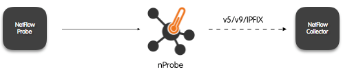
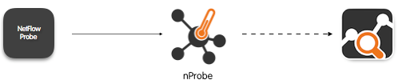

nProbe Режимы
nProbe можно использовать в трёх режимах, а именно:
Зонд
Коллектор (только сбор потока, без зонда)
Реле
Прокси: Получайте потоки через NetFlow и отправляйте их (возможно, в сочетании с перехваченным трафиком) на удаленный коллектор.
Режим зонда
nprobe -i eth0 -n collector_ip:2055

nProbe в режиме зонда
По умолчанию экспортированные потоки отправляются по URL-адресу, но их также можно собирать по TCP и TLS. Используемый синтаксис: <метод>://<IP>:<порт>.
Пример:
-н 2055
-н udp://2055
-н tcp://2055
-н tls://2055
-n tls://192.168.2.25:2055
Режим коллектора
nprobe -3 2055

nProbe в режиме коллекционера
В этом режиме nProbe может собирать NetFlow/IPFIX/sFlow. По умолчанию потоки собираются по URL-адресу, но их также можно собирать по TCP и TLS. Используемый синтаксис: <метод>://[<IP>:]<порт>. В случае, если указан IP-адрес, порт сбора привязан только к указанному IP-адресу, а не ко всем интерфейсам хоста, на котором работает nProbe.
Пример:
-3 2055
-3 udp://2055
-3 tcp://2055
-3 tls://2055
-3 tls://192.168.2.25:2055
Режим реле
nprobe -i none -n none -3 zmq://a.b.c.d:1234
Иногда вам необходимо собрать (с помощью хоста в частной сети) потоки (более UDP) от устройств, расположенных в Интернете/демилитаризованной зоне, и вы хотите избежать дыр в брандмауэре по соображениям безопасности. В этом случае вам понадобится ретранслятор потока, который по сути представляет собой приложение, развернутое в общедоступном Интернете и действующее как точка встречи.
Предположим, что мы развернули flowRelay на хосте с общедоступным IP-адресом abcd, прослушивающим входящие потоки на порту 2055, и nProbe на хосте e.f.g.h. Все, что вам нужно сделать, это:
[хост a.b.c.d] flowRelay -c 2055 -z «zmq://a.b.c.d:1234c»
[хост e.f.g.h] nprobe -i none -n none -3 zmq://a.b.c.d:1234
Примечание
Приложение flowRelay является частью пакета nProbe.
Режим прокси
nprobe -3 2055 -n collector_ip:2055 -V 9

nProbe в режиме прокси
В режиме прокси вы можете конвертировать из NetFlow v5 v9/NetFlow Lite/sFlow/IPFIX/jFlow в NetFlow v5, v9 или IPFIX, чтобы плавно перейти на более новые версии протокола netflow, используя при этом предыдущие версии протокола. Таким образом, вы можете, например, конвертировать потоки, исходящие от вашего маршрутизатора v5, в IPFIX и наоборот. Обратите внимание, что при некоторых комбинациях (например, от v9 до v5) вы можете потерять некоторую информацию о потоке. В этом режиме собранные потоки преобразуются во внутреннее представление потока, помещаются в кэш, а затем экспортируются в соответствии со значением по умолчанию или -T, если указано.
Режим прокси с Collector PassThrough
nprobe -3 2055 --collector-passthrough --zmq tcp://192.168.1.200:5678

nProbe в режиме прокси с помощью Collector PassThrough
Аналогично режиму прокси, но намного быстрее, поскольку потоки не помещаются в кеш, а конвертируются для экспорта через ZMQ, Syslog и Kafka (через плагин экспорта). В этом случае структура потока сохраняется, -T игнорируется, и поток экспортируется в формате JSON как есть, без какого-либо преобразования. Этот режим рекомендуется использовать, если вы хотите собрать потоки от NetFlow/IPFIX/sFlow и отправить их потребителю на базе JSON.